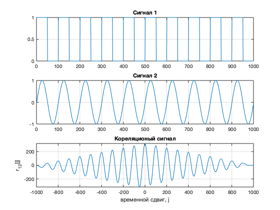

Корреляционный анализ
Contents
Построить график корреляционной функции двух произвольных сигналов.
close all;
clear;
Fs = 100;
ts = 0 : 1/Fs : 10-1/Fs;
x1 = (square(2*pi*1*ts) + 1)/2;
x2 = sin(2*pi*1*ts);
figure;
subplot(3,1,1);
plot(x1); grid on;
title('Сигнал 1');
subplot(3,1,2);
plot(x2); grid on;
title('Сигнал 2');
r12 = sum(x1.*x2);
[r12, lags] = xcorr(x1, x2);
subplot(3,1,3);
plot(lags, r12), grid on; xlabel('временной сдвиг, j'), ylabel('r_{12}[j]');
title('Кореляционый сигнал');

Разработать скрипт, позволяющий опеределить переодичность функции (или ее отсутствие) произвольного сигнала
clear;
Fs = 100;
ts = 0 : 1/Fs : 10-1/Fs;
N = length(ts);
x = square(2*pi*1*ts)/2;
x = awgn(x, 30);
y = 1 * rand(1, N);
figure;
subplot(4, 1, 1);
plot(x); grid on; title('Исходный сигнал');
xlabel('Время');
[c, lags] = xcorr(x, 'coeff');
subplot(4, 1, 2);
plot(lags, c); grid on; title('АКФ переодичного сигнала');
xlabel('Временной сдвиг, j'); ylabel('c[j]');
subplot(4, 1, 3);
plot(y); grid on; title('Исходный сигнал');
xlabel('Время');
[c, lags] = xcorr(y, 'coeff');
subplot(4, 1, 4);
plot(lags, c); grid on; title('АКФ случайного сигнала');
xlabel('Временной сдвиг, j'); ylabel('c[j]');

Наложить на произвольный аудиофайл эффект "ЭХО" аналогично заданию из первого семинара. Разработать скрипт, который с помощью автокорреляции убирает эхо.
clear;
[x, fs] = audioread('test.wav');
figure;
subplot(5, 1, 1);
plot(x(:, 1)); grid on; title('Исходный сигнал');
a = 0.7;
d = 5000;
z = zeros(size(x));
z = x;
for i = d+1 : length(x)
z(i) = x(i) + a*x(i-d);
end
subplot(5, 1, 2);
plot(z(:, 1)); grid on; title('Сигнал с эфектом эхо');
[corr, lags] = xcorr(z, 'coeff');
corr = corr(lags>0);
lags = lags(lags>0);
subplot(5, 1, 3);
plot(lags/fs, corr), grid on;
title('Автокорреляционная функция');
subplot(5, 1, 4);
findpeaks(corr,lags,'MinPeakHeight', 0.3);
[peaks, dl] = findpeaks(corr(100:length(corr)), lags(100:length(corr)), 'MinPeakHeight', 0.3);
title('Пики автокорреляционной функции');
y_clean = filter(1,[1 zeros(1,dl - 1) 0.5],z);
subplot(5,1,5);
plot(y_clean), grid on;
title('Отфильтрованный сигнал');

Разработать скрипт, который с помощью двумернойкорреляции позволяет найти шаблон изображения внутри другого изображения.
clear;
part = imread('find.jpg');
picture = imread('test.jpg');
faceGray = rgb2gray(part);
imgGray = rgb2gray(picture);
figure;
subplot(2, 2, 1);
imshow(faceGray);
title('Искомый кусочек')
subplot(2, 2, 2);
imshow(picture);
title('Исходная картинка');
Corr = normxcorr2(faceGray,imgGray);
subplot(2, 2, 3);
plot(Corr), grid on;
title('корреляционный сигнал');
[maxVal,maxIndex] = max(abs(Corr(:)));
[max_Y,max_X] = ind2sub(size(Corr),maxIndex);
[x, y, z] = size(part);
subplot(2, 2, 4);
imshow(picture);
rectangle('Position',[(max_X- y) (max_Y- x) y x],'LineWidth',4,'EdgeColor','w');
title('Результат');